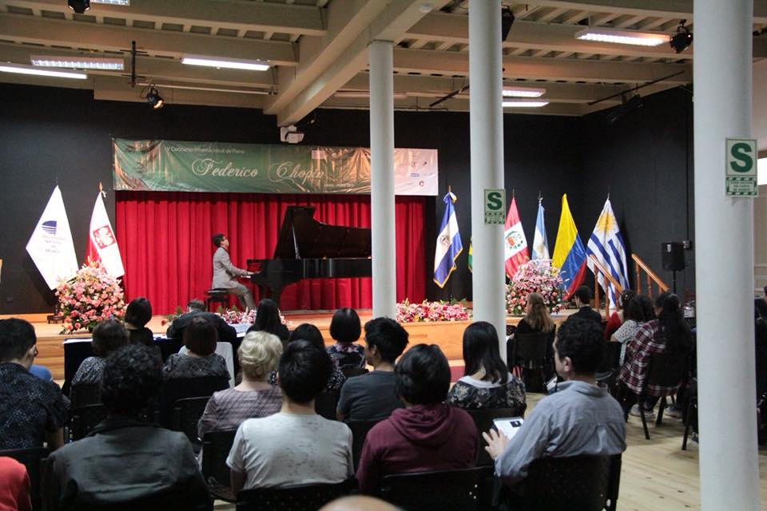
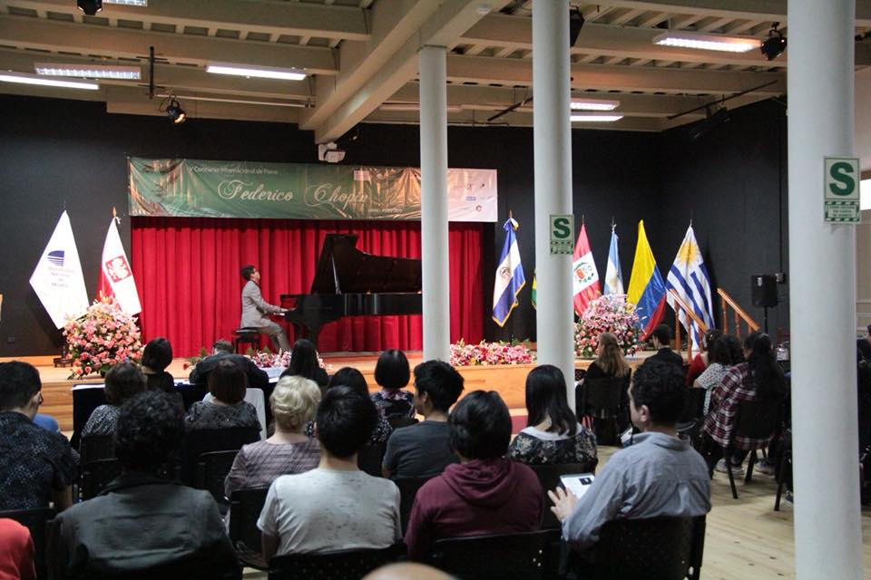
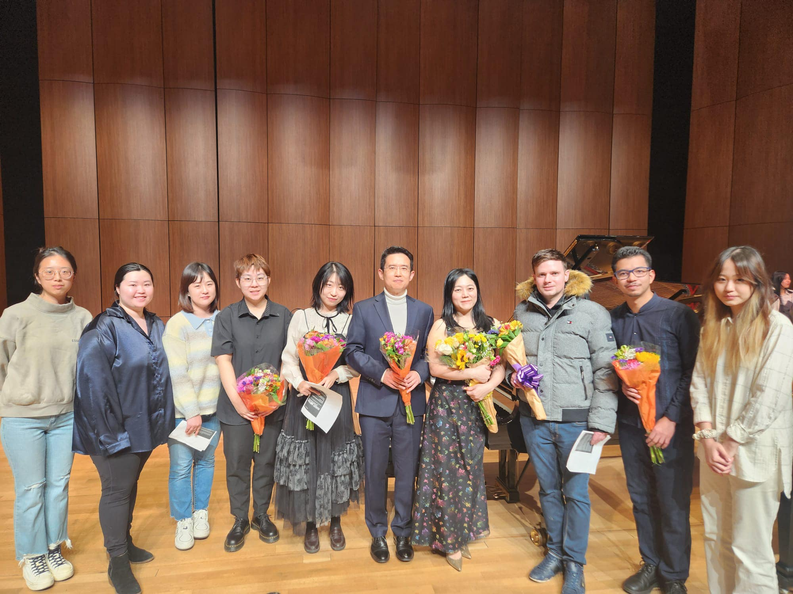
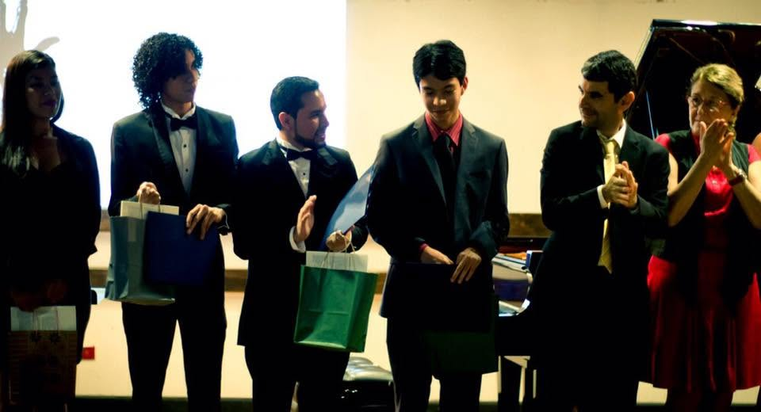
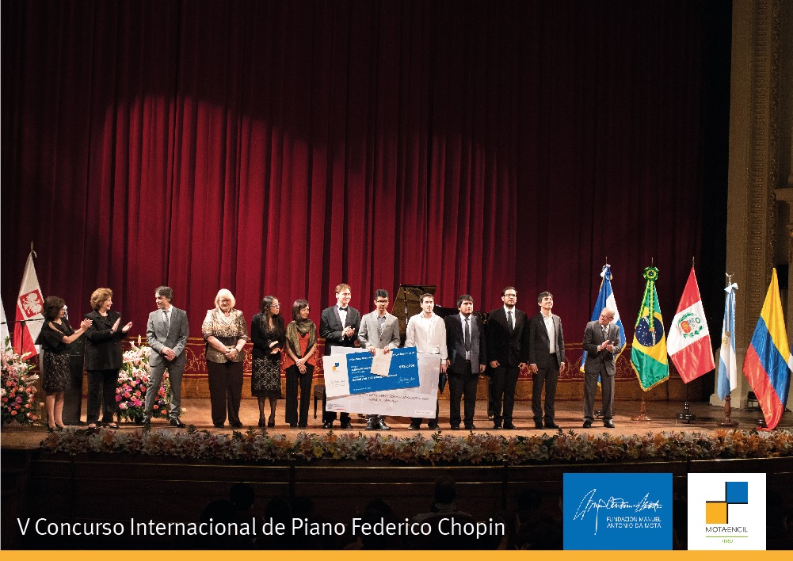
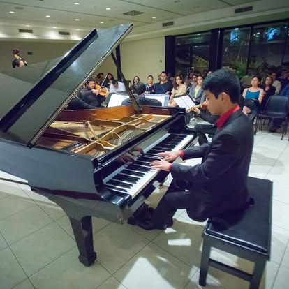
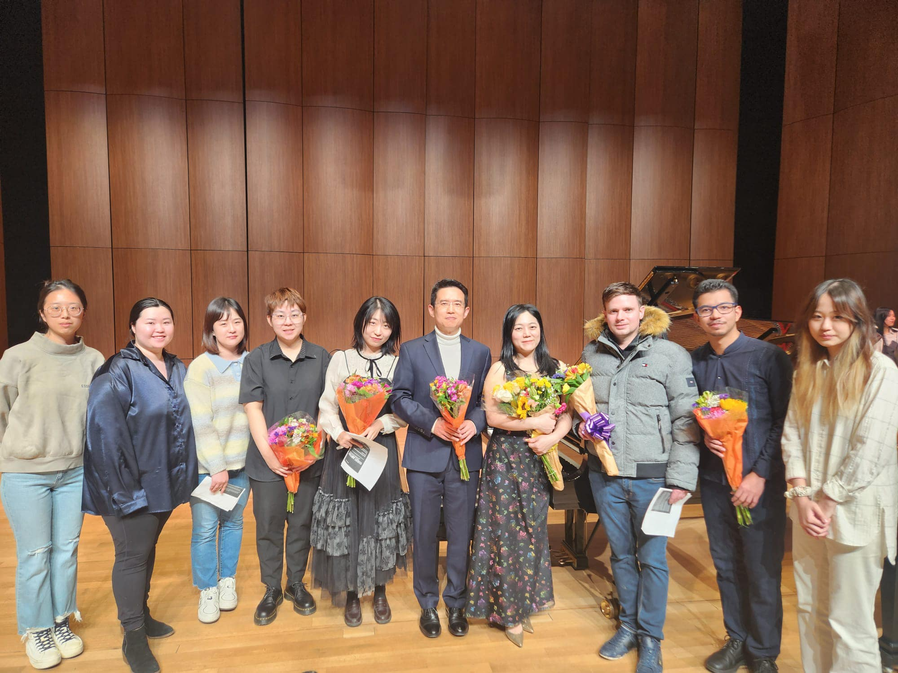
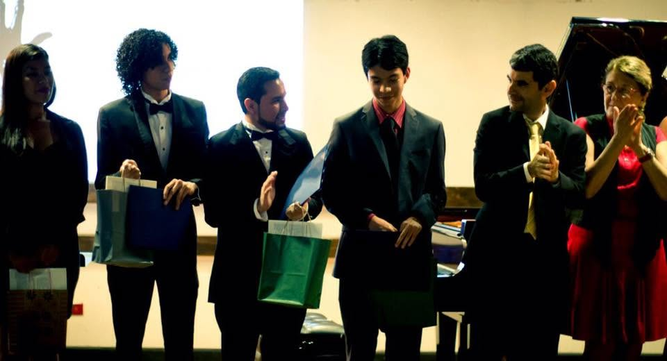
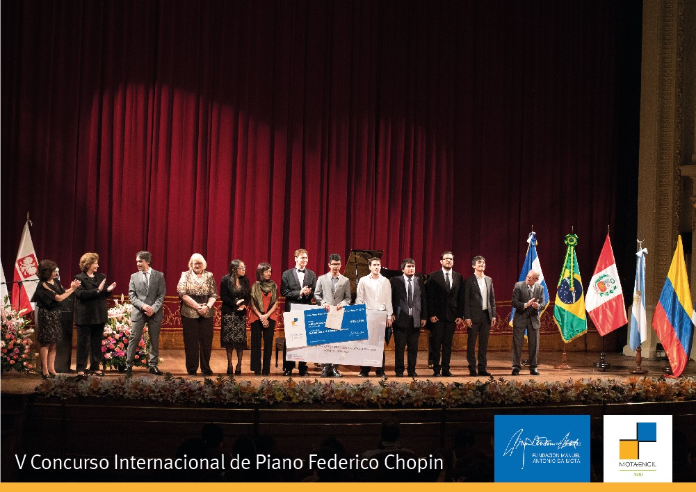
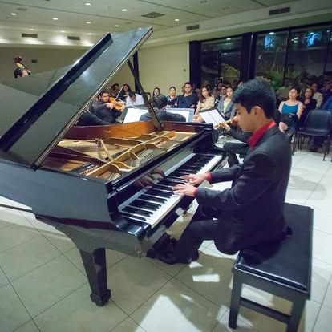

Biografía
Nacido en La Libertad, El Salvador, Alejandro completó el Doctorado en Interpretación de Piano con un énfasis secundario en Teoría Musical y la Maestría en Interpretación de Piano en la University of Northern Colorado (UNC), bajo la tutela del Dr. Lei Weng. Previamente, obtuvo la Licenciatura en Interpretación de Piano con honores en la Universidad de Costa Rica, bajo la tutela del Dr. Manuel Matarrita. Su disertación doctoral, La memoria cultural de El Salvador y la música para piano de María de Baratta: Kushkatan, Nahualismo y la representación de la indigeneidad, fue reconocida con la Distinción del Decano de Estudios de Posgrado a la Disertación Destacada, uno de los tres premios otorgados a todas las disertaciones doctorales de UNC. En 2020, la revista Forbes de Centroamérica lo destacó como “uno de los más creativos” por sus logros internacionales.
Debutó como solista a los doce años con la Orquesta Sinfónica Nacional de El Salvador y, desde entonces, ha actuado con la Orquesta Sinfónica Nacional de Costa Rica, la Orquesta Sinfónica de la Universidad de Costa Rica, la Orquesta Sinfónica de Cartago, la Filarmónica de Texas Central y la Orquesta Sinfónica de UNC.
Entre sus premios se encuentran el Primer Premio en el Concurso Internacional María Clara Cullell (Costa Rica, 2015); el Segundo Premio en el Concurso Iberoamericano para Jóvenes Pianistas (República Dominicana, 2016); el Premio Patrick W. Price en el 10º Festival Internacional de Piano del Estado de Texas (Estados Unidos, 2019); el Primer Premio en el Concurso de Piano Fryderyk Chopin para Centro y Sudamérica (Perú, 2020); el Primer Premio en el Concurso de Piano de la Asociación Nacional de Maestros de Música (MTNA) para Jóvenes Artistas del Estado de Colorado (2020 y 2021); el Premio de Pieza Comisionada y finalista en el Concurso Internacional de Piano del Estado de Texas (2022); el Cuarto Lugar en el Concurso Internacional José Jacinto Cuevas Yamaha (México, 2023); y el Primer Premio en el Concurso Southard (Estados Unidos, 2023).
Ha sido miembro activo del capítulo universitario de la MTNA en UNC desde 2021, donde se desempeñó como profesor voluntario y como juez del 5º Concurso y Festival de Piano Juvenil MTNA-UNC en 2022. Más recientemente, trabajó como Manager del Colorado International Piano Academy & Festival. Actualmente reside en Costa Rica, donde ejerce como profesor y pianista.
 

 






